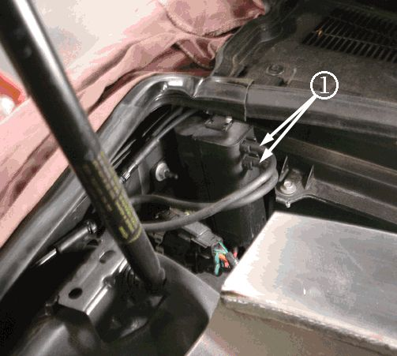
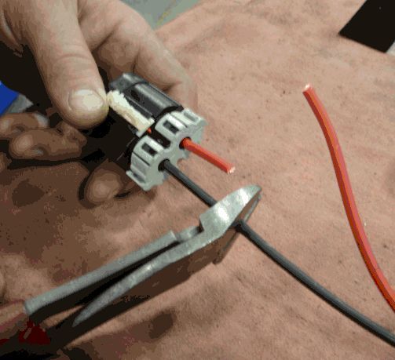
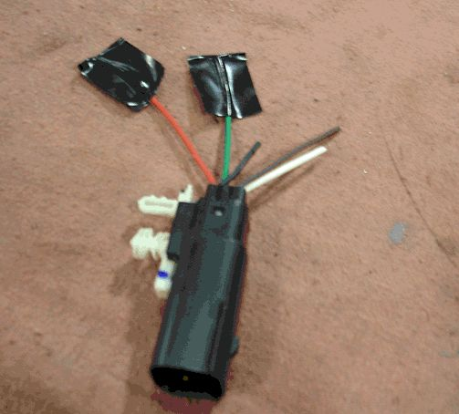
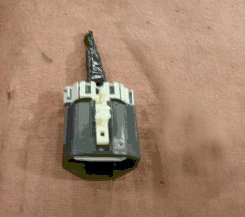
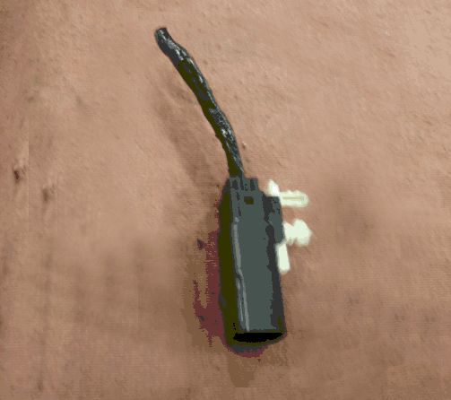
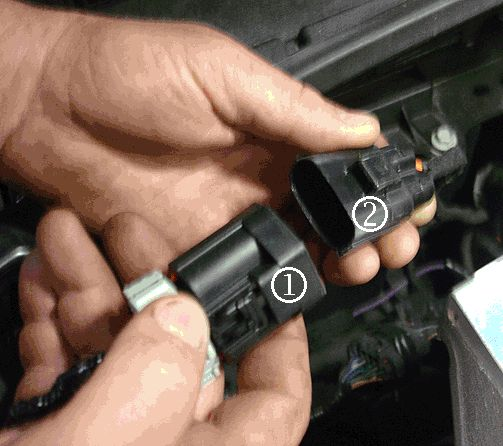
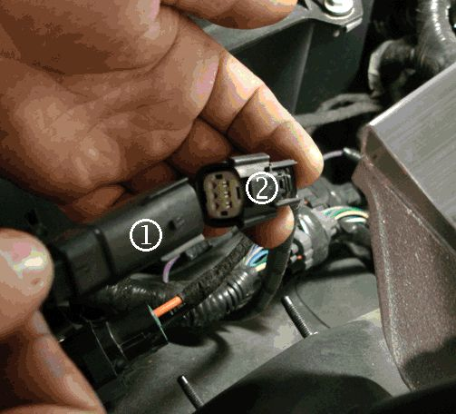
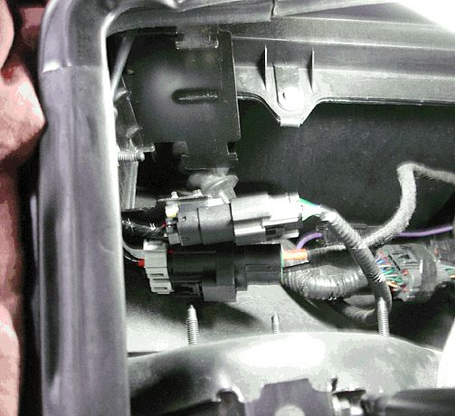
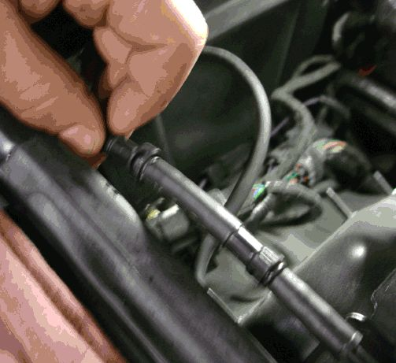

Windshield Washer Solvent Heater Removal
WINDSHIELD WASHER SOLVENT HEATER REMOVAL
1. Disconnect the windshield wiper solvent inlet and outlet hoses (1) from the windshield washer solvent heater assembly and from the two plastic inlet and outlet windshield wiper solvent hoses.
Note
Do NOT remove the connector retention clips from the connectors. Do NOT remove the assembly bracket from the engine compartment.
2. Disconnect the two electrical connectors at the windshield washer solvent heater assembly.

3. Remove the windshield washer solvent heater assembly from the assembly bracket using a small flat blade screwdriver.
4. Place the windshield washer solvent heater assembly on a work bench.

5. Cut the two-wire connector from the windshield washer solvent heater assembly. Vary the length of the red and black wires on the connector. Refer to illustration.

6. Cut the five-wire connector from the windshield washer solvent heater assembly. Vary the length of the five wires on the connector.
7. Discard the windshield washer solvent heater assembly and, if install in recall 08048, the jumper harness with inline fuse.

8. Wrap the large connector with two wires in electrical tape.
9. Wrap the red and green wires on the small connector separately.

10. Wrap the five wires on the small connector with electrical tape.

11. Connect the large two-wire connector (1) to the body harness (2).

12. Connect the small five-wire connector (1) to the body harness (2).

13. Secure the large two-wire connector and small five-wire connector to the windshield washer solvent heater assembly bracket.

14. Connect the two windshield wiper solvent inlet and outlet hoses together. Use a portion of the rubber wiper solvent hose removed in Step 1 if needed to join the two plastic wiper solvent hoses together. Discard the remaining portions of the rubber windshield wiper solvent hoses.
15. Route and secure windshield wiper solvent hose along passenger side front fender.
16. Return to the appropriate the Fuse Removal service procedure in this bulletin to continue this repair.